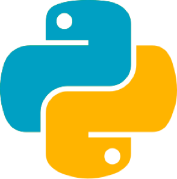
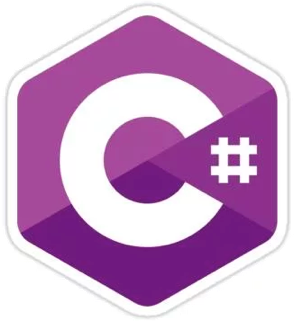
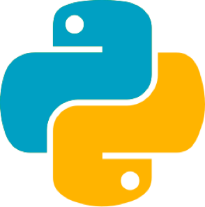
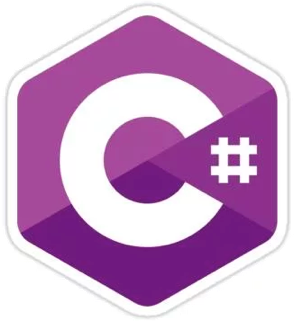

API's
Today’s applications are expected to deliver the same user experience and functionality across all platforms; phone, tablet, computer, internet, and soon voice. The only way to do this is by taking an API-first approach; encaspulating business logic & data access and leaving the interface layer to the client. Furthermore, modern day cloud technology means API’s today can be drastically cheaper than they were yesterday.
Since Day 1 I have been an API-first developer. Recently, my skillset has grown to include in depth knowledge of cloud architecture and serverless designs. In my professional career I have developed & maintained more than three dozen business-critical API endpoints.
I can build, deploy and manage Cloud-First API’s in C#, Python & JavaScript.
 



SCALABLE
How many users do you expect your product to have in the next month? Six months? Three years? Poor architectural and technical design choices made at the MVP level can and often do plague your development efforts for months to come. I’ve delivered production systems that have handled terabytes of data a month and thousands of requests a day - scalability is my mother tongue.
EXTENSIBLE
Software is never static - you always need new features, new fixes, new designs, new capabilities. And a static API is a dead API; this is the inherit peril of outsourcing development work. Contractors and consultants will deliver API’s that meets the specs and satisifes the contract - frequently with little thought beyond it. I build API with future development in mind - the longevity of any project I make is as important to me as the inital build.
PROFITABLE
Everything costs something - and while hardware is drastically cheaper than the cost of developing the software it runs, it still costs something. And that something is recurring and grows with user base. But done correctly a modern, cloud first API rarely costs more than a cup of coffee a week (and in a lot of cases, it can be completely free) when you’re not at Netflix-scale. That’s why I combine my extensive knowledge of cloud architecture with API development to deliver extreme profit margins.